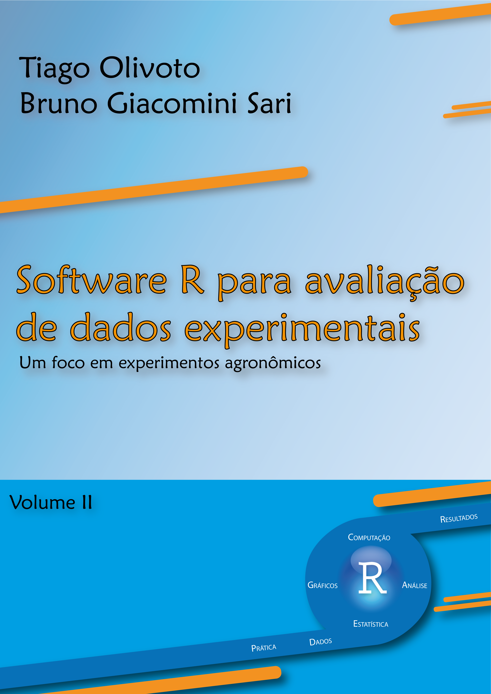

Prefácio
Atualmente, na área das Ciências Agrárias, identifica-se o uso de diversos sofwares para a análise estatística de dados originados em coletas de experimentos. Esta miscelânea de sofwares pode confundir o pesquisador no momento de escolher qual é o software que será adotado para suas análises estatísticas, já que existem aqueles que devem ser adquiridas licenças para uso e nem todos disponibilizam opções de todos os métodos de análise estatística de dados.
Dentre esses, o Software R destaca-se por ser uma linguagem de programação de código aberto open source basicamente destinado para computação estatística e gráficos. Com a proposta de organização de um curso e capacitação de acadêmicos e professores envolvidos na Graduação e Pós-Graduação na Área de Ciências Agrárias, os Drs. Bruno Giacomini Sari e Tiago Olivoto propuseram-se a elaborar o material Software R para avaliação de dados experimentais: Um foco em experimentos agronômicos, onde oferecem uma excelente apresentação e introdução ao ambiente R, bem como diversas aplicações de abordagens estatísticas em experimentos agrícolas.
Esta é uma edição ampliada e atualizada da primeira versão do material, onde apresentam-se variações nos tipos de tratamentos (qualitativos e quantitativos), variações nos desdobramentos das interações e variações nas formas da casualização de experimentos bifatoriais. Uma breve abordagem ao uso de modelos lineares generalizados é apresentada. Técnicas biométricas voltadas ao melhoramento genético vegetal como análise conjunta de experimentos, análise de estabilidade e associações entre variáveis ou grupo de variáveis são também abordadas. Todos os exemplos são reproduzíveis. A expectativa é de que este documento seja útil para aqueles pesquisadores que desejam utilizar este ambiente de programação para a realização de suas análises estatísticas.
Parabenizamos os autores pela iniciativa e qualidade do material oferecido.
Alessandro Dal’Col Lúcio
Professor Titular, Setor de Experimentação Vegetal
Departamento de Fitotecnia
Centro de Ciências Rurais
Universidade Federal de Santa Maria
Por que eu deveria ler este e-Book
Com uma disponibilidade cada vez maior de bons softwares estatísticos, a escolha por um único programa se torna uma tarefa difícil, até mesmo para alguém com vasta experiência na área de análise de dados de experimentos agronômicos. O ambiente de programação R é, também, um poderoso software estatístico. Assim, inúmeras são as fontes com informações relacionadas a análise de dados, criação de gráficos, etc.
A grande maioria dos blogs12345678 relacionados ao software R estão na língua Inglesa e mesmo que nos tempos atuais esta não seja uma questão limitante, materiais de qualidade em língua Portuguesa são muito bem-vindos. Por exemplo, a R-br9 é a lista Brasileira oficial de discussão do programa R e tem o propósito de permitir a troca de informações entre os usuários de R (em português) e contém inúmeras dicas/discussões sobre as mais diversas áreas de estudo.
Esta material, voltado para a análise de dados de experimentos agronômicos, apresenta a teoria e a aplicação no software R dos procedimentos mais utilizados na análise de experimentos agronômicos. Assim, ela pode servir de referência para aqueles que querem realizar suas análises no R, principalmente para os que ainda possuem pouca ou nenhuma experiência com este ambiente de programação.
Estrutura
Este material contém 14 capítulos divididos em 3 principais partes. Na parte I (Capítulos 1 a 5 ) o ambiente R é apresentado. O Capítulo 1, apresenta uma breve introdução sobre os softwares R e RStudio, mostrando como instalar e carregar os pacotes necessários, além de mostrar ao leitor como criar seu primeiro script. O Capítulo 2 apresenta os tipos de objetos. No Capítulo 3, as principais operações matemáticas são mostradas. No Capítulo 4 é mostrado como loops podem ser úteis para repetir um determinado código diversas vezes. No Capítulo 5 é mostrado os dados podem ser armazenados em objetos com diferentes classes.
A parte II (Capítulos 6 a 9) é voltada para a organização, manipulação e apresentação gráfica de dados. No Capítulo 6 é mostrado diversos formatos de dados podem ser carregados no ambiente R. O Capítulo 7 trata da manimulação dos dados, tais como adição, seleção, resumo e combinação de variáveis. O Capítulo 8 trata da apresentação dos dados utilizando diversos tipos de gráficos, tais como barra, histogramas e gráficos de dispersão. O Capítulo 9 é voltado para a exportação dos dados, tanto numérico quanto gráficos.
A parte III (Capítulos 10 a 14) é voltada para a análise dos dados. O Capítulo 10 trata da análise de dados experimentais, incluindo a estatística básica, análise descritiva, análise de experimentos uni- e bi-fatoriais considerando os principais delineamentos, transformações de dados, análise de covariância bem como uma breve abordagem ao uso de modelos lineares generalizados. O Capítulo 11 é voltado exclusivamente para análise de regressão linear e não linear. O Capítulo 12 trata da associação entre variáveis tais como correlação linear, correlação parcial e análise de trilha. No Capítulo 13 a análise multivariada de dados é apresentada. Por fim –mas não menos importante– no Capítulo 14 são apresentados diversos modelos para análise de ensaios multi-ambientes, com ênfase na aplicação dos métodos AMMI10, BLUP11 e GGE12.
Conjunto de dados
Exemplos reproduzíveis são muito importante para uma curva de aprendizado satisfatória no ambiente de programação R. Os leitores podem interagir com os exemplos deste material ao lê-lo. Por exemplo, é possível, utilizando Ctrl+C, copiar uma programação, colar em seu ambiente de trabalho utilizando Ctrl+V e saber imediatamente o que acontece se certos parâmetros/argumentos de um modelo/análise forem alterados. Todos os dados utilizados estão disponíveis no repositório digital deste e-book. Os dados são carregados no ambiente R utilizando a função import() do pacote rio.